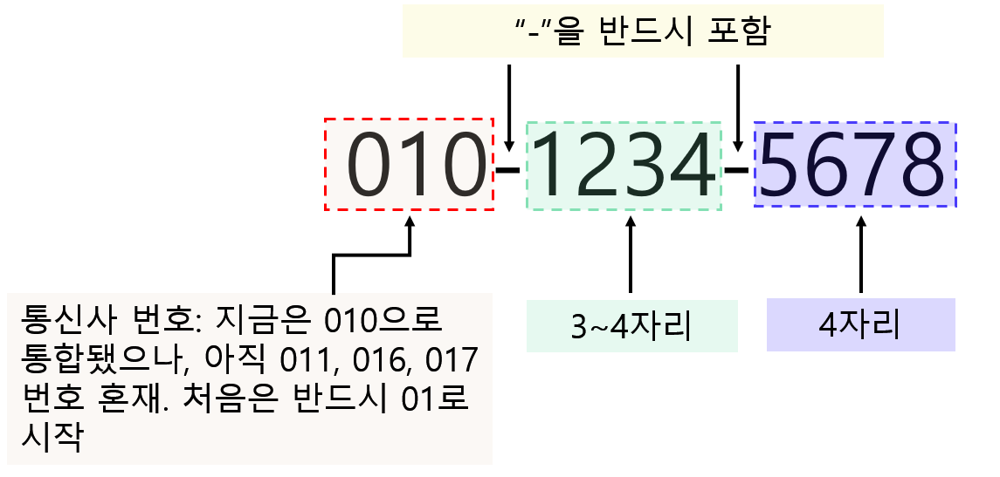
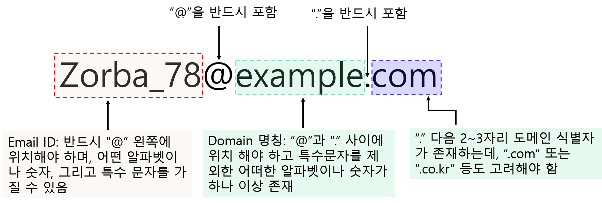

3.3 정규 표현식(regular expression)
주어진 문자열에 특정한 패턴이 있는 경우, 해당 패턴을 일반화(수식화)한 문자열
특정 패턴을 표현한 문자열을 메타 문자(meta character) 라고 지칭
일반적으로 특정 규칙 또는 패턴이 문자열을 찾고(to find), 해당 규칙에 해당하는 문자열을 대체(replace, substitute) 하기 위해 사용
R 언어 뿐 아니라 타 프로그래밍 언어(C, Perl, Python 등) 워드 프로세서, 텍스트 편집기, 검색 엔진, 운영체제(Windows, Linux 등)에서도 범용적으로 사용
정규식이라고도 불리우며 영어로는 regex 또는 regexp 로 명칭됨
3.3.1 기본 메타 문자
| Expression | Name | 설명 |
|---|---|---|
| . | Period (마침표) | 무엇이든 한 글자를 의미 |
| + | Plus | + 앞에 오는 표현이 하나 이상 포함 |
| * | Asterisk | * 앞에 오는 표현이 0 또는 하나 이상 포함 |
| ? | Question mark | ? 앞에 오는 표현이 0 또는 하나 포함 |
| ^ | Caret | ^ 뒤에 오는 표현으로 시작 |
| $ | Dollar | $ 앞에 오는 표연으로 끝나는 경우 |
| {} | Curly bracket | {} 앞에 정확히 {}에 있는 숫자만큼 반복되는 패턴 (예시 참고) |
| () | Parenthesis | () 정규 표현식 내 하위(그룹) 표현식 (예시 참고) |
- 메타 문자를 메타 문자가 아닌 문자 자체로 인식하기 위해서는 해당 문자 앞에
\\를 붙임
# 마침표가 있는 위치 반환
str2 <- str[1:2]
regexpr(".", str2)[1] 1 1
attr(,"match.length")
[1] 1 1
attr(,"index.type")
[1] "chars"
attr(,"useBytes")
[1] TRUE# 에러 출력
regexpr("\.", str2)Error: ""\."로 시작하는 문자열 중에서 '\.'는 인식할 수 없는 이스케이프입니다# 정확한 표현
regexpr("\\.", str2)[1] 42 43
attr(,"match.length")
[1] 1 1
attr(,"index.type")
[1] "chars"
attr(,"useBytes")
[1] TRUE. 마침표(period)
- 어떤 임의의 한 문자를 의미
# 문자열 자체가 존재하니까 참값 반환
grepl(".", jude) [1] TRUE TRUE TRUE TRUEgrepl(".", "#@#%@FDSAGF$%") [1] TRUE# 문자없음 ""
grepl(".", "")[1] FALSE# a로 시작하고 중간에 어떤 글자가 하나 존재하고 b로 끝나는 패턴
bla2 <- c("aac", "aab", "accb", "acadb")
g <- grepl("a.b", bla2)
bla2[g][1] "aab" "acadb"# a와 b 사이 어떤 두 문자 존재하는 패턴
g <- grepl("a..b", bla2)
bla2[g][1] "accb"+ (plus)
+에 선행된 패턴이 한 번 이상 매칭 \(\rightarrow\)+앞에 문자를 1개 이상 포함
# "a"를 적어도 하나 이상 포함한 원소 반환
grepl("a+", c("ab", "aa", "aab", "aaab", "b"))[1] TRUE TRUE TRUE TRUE FALSE# "l"과 "n" 사이에 "o"가 하나 이상인 원소 반환
grepl("lo+n", c("bloon", "blno", "leno", "lnooon", "lololon"))[1] TRUE FALSE FALSE FALSE TRUE* (asterisk)
*앞에 선행된 문자 또는 패턴이 0번 이상 매치 \(\rightarrow\)*앞에 문자를 0개 또는 1개 이상 포함
# xx가 "a"를 0 또는 1개 이상 포함하고 있는가?
xx <- c("bbb", "acb", "def", "cde", "zde", "era", "xsery")
# "a" 존재와 상관 없이 모든 문자열이 조건에 부합
g <- grepl("a*", xx)
xx[g][1] "bbb" "acb" "def" "cde" "zde" "era" "xsery"# "aab"와 "c" 사이에 "d"가 없거나 하나 이상인 경우
# "caabec"인 경우 "aab"와 "c" 사이에 "e"가 존재하기 때문에 FALSE
grepl("aabd*c", c("aabddc", "caabec", "aabc"))[1] TRUE FALSE TRUE? (question)
?앞에 항목은 선택 사항이며 많아야 한 번 매치 \(\rightarrow\)?앞의 문자를 0개 또는 1개 포함
xx <- c("ac", "abbc", "abc", "abcd", "abbdc")
g <- grepl("ab?c", xx) ## "a"와 "c" 사이 "b"가 0개 또는 1개 포함
xx[g][1] "ac" "abc" "abcd"yy <- c("aabc", "aabbc", "daabec", "aabbbc", "aabbbbc")
g <- grepl("aabb?c", yy) ## "aab"와 "c" 사이에 "b"가 0개 또는 1개 있는 경우 일치
yy[g][1] "aabc" "aabbc"^ (caret)
^뒤에 나오는 문자(열)로 시작하는 문자열 반환
# str에서 "The"로 시작하는 문자열 반환
g <- grepl("^The", str)
str[g][1] "The birch canoe slid on the smooth planks."
[2] "These days a chicken leg is a rare dish."
[3] "The juice of lemons makes fine punch."
[4] "The box was thrown beside the parked truck."
[5] "The hogs were fed chopped corn and garbage."[^]: 대괄호(straight bracket) 안에 첫 번째 문자가^인 경우^뒤에 있는 문자들을 제외한 모든 문자와 매치
xx <- c("abc", "def", "xyz", "werx", "wbcsp", "cba")
# "a", "b", "c"를 순서 상관 없이 동시에 포함하지 않은 문자열 반환
g <- grepl("[^abc]", xx)
xx[g][1] "def" "xyz" "werx" "wbcsp"^[]:[]안에 들어간 문자 중 어느 한 단어로 시작하는 문자열 반환
xx <- c("def", "wasp", "sepcial", "statisitc", "abbey load", "cross", "batman")
g <- grepl("^[abc]", xx)
xx[g][1] "abbey load" "cross" "batman" $ (dollar)
$앞에 나오는 문자 및 패턴과 문자열의 맨 마지막 문자 패턴과 매치
g <- grepl("father$", x)
writeLines(x[g])Darth Vader: If you only knew the power of the Dark Side.
Obi-Wan never told you what happend to your father
Darth Vader: No. I'm your father{} (curly bracket)
{}앞의 문자 패턴이{}안에 숫자만큼 반복되는 패턴을 매치{n}: 정확히 n 번 매치{n,m}: n 번에서 m 번 매치{n, }: 적어도 n 번 이상 매치
xx <- c("tango", "jazz", "swing jazz", "hip hop",
"groove", "rock'n roll", "heavy metal")
# "z"가 정확히 2번 반복되는 원소 반환
g <- grepl("z{2}", xx)
xx[g][1] "jazz" "swing jazz"# "e"가 2번 이상 반복되는 원소 반환
yy <- c("deer", "abacd", "abcd", "daaeb", "eel", "greeeeg")
g <- grepl("e{2,}", yy)
xx[g][1] "tango" "groove" "rock'n roll" "heavy metal"# "b"가 2번 이상 4번 이하 반복되고 앞에 "a"가 있는 원소 반환
zz <- c("ababababab", "abbb", "cbbe", "xabbbbcd")
g <- grepl("ab{2,4}", zz)
zz[g][1] "abbb" "xabbbbcd"
참고: 위에서 소개한 메타 문자 중
*는 {0,}, +는 {1,}, ?는 {0,1}과 동일한 의미를 가짐
() (parenthesis)
- 특정 문자열을
()로 grouping - 한 개 이상의 그룹 지정 가능
# ab가 1~4회 이상 반복되는 문자열 반환
g <- grepl("(ab){1,4}", zz)
zz[g][1] "ababababab" "abbb" "xabbbbcd" # "The"로 시작하고 "punch"가 포함된 문자열 ㅂ반환
g <- grepl("^(The)+.*(punch)", str)
str[g][1] "The juice of lemons makes fine punch."| (vertical bar)
|를 기준으로 좌우 문자 패턴 중 하나를 의미하며OR조건과 동일한 의미를 가짐[]의 경우 메타문자나 문자 한글자에 대해서만 적용되는 반면|는 문자를 묶어 문자열로 지정 가능
g <- grepl("(is|was)", str)
str[g][1] "These days a chicken leg is a rare dish."
[2] "Rice is often served in round bowls."
[3] "The box was thrown beside the parked truck."
[4] "Large size in stockings is hard to sell." g <- grepl("(are|were)", str)
str[g][1] "These days a chicken leg is a rare dish."
[2] "The hogs were fed chopped corn and garbage."3.3.2 문자 집합
| Expression | 설명 |
|---|---|
| \w | 문자(letter), 숫자(digit), 또는 _ (underscore) 포함 |
| \d | 숫자 0에서 9 |
| \s | 공백문자(line break, tab, spaces) |
| \W | \w에 포함하지 않는 표현 |
| \D | 숫자가 아닌 표현 |
| \S | 공백이 아닌 표현 |
# \w 를 이용해 email 추출
email <- c("demo@naver.com",
"sample@gmail.com",
"coffee@daum.net",
"redbull@nate.com",
"android@gmail.com",
"secondmoon@gmail.com",
"zorba1997@korea.re.kr")
# 이메일 주소가 naver 또는 gmail만 추출
g <- grepl("\\w+@(naver|gmail)\\.\\w+", email)
email[g][1] "demo@naver.com" "sample@gmail.com" "android@gmail.com"
[4] "secondmoon@gmail.com"# 숫자를 포함하는 문자열 추출: \d
ex <- c("ticket", "51203", "+-.,!@#", "ABCD", "_", "010-123-4567")
g <- grepl("\\d", ex)
ex[g][1] "51203" "010-123-4567"# 뒤쪽 공백문자 제거
xx <- c("some text on the line 1; \n and then some text on line two ")
sub("\\s+$", "", xx)[1] "some text on the line 1; \n and then some text on line two"# 영문자(소문자 및 대문자 포함), 숫자, 언더바(_)를 제외한 문자 포함
g <- grepl("\\W", ex)
ex[g][1] "+-.,!@#" "010-123-4567"# 숫자를 제외한 모든 문자 반환
g <- grepl("\\D", ex)
ex[g][1] "ticket" "+-.,!@#" "ABCD" "_" "010-123-4567"# 영문자, 숫자, 언더바를 제외한 모든 문자 포함하고
# 숫자와 특수문자를 포함하는 문자열도 제외
g <- grepl("\\W\\D", ex)
ex[g][1] "+-.,!@#"## 공백, 탭을 제외한 모든 문자 포함
blank <- c(" ", "_", "abcd", "\t", "%^$#*#*")
g <- grepl("\\S", blank)
blank[g][1] "_" "abcd" "%^$#*#*"3.3.3 문자 클래스
문자 집합을 더 세분화하여 특정 목적에 맞는 정규 표현형
대괄호(
[]) 안에 특정 패턴에 해당하는 문자로 규칙 표현하고 하이픈(-)을 사용해 특정 문자의 범위 지정 가능응용 가능한 문자 클래스
| Expression | 설명 |
|---|---|
| [a-z] | 알파벳 소문자 중 하나 |
| [A-Z] | 알파벳 대문자 중 하나 |
| [0-9] | 0에서 9까지 숫자 중 하나 |
| [a-zA-Z] | 모든 알파벳 중 하나 |
| [a-z0-9] | 알파벳 소문자나 숫자 중 한 문자 |
| [가-힝] | 모든 한글 중 하나 |
| [(abc)d] | 문자열 ‘abc’와 문자 ’d’ 중 하나 |
- POSIX (Portable Operating System Interface): 서로 다른 UNIX OS의 API를 정리하여 이식성이 높은 유닉스 응용 프로그램을 개발하기 위한 목적으로 IEEE가 책정한 애플리케이션 인터페이스 규격 (“POSIX” 2018 Accessed: 2020-04-16)
| Expression | 설명 |
|---|---|
| [[:punct:]] | 구둣점 문자 [][!#$%&’()*+,./:;<=>?@\^_`{|}~-] |
| [[:alpha:]] | 알파벳 [A-Za-z]와 동일한 표현 |
| [[:lower:]] | 소문자 알파벳 [a-z]와 동일 |
| [[:upper:]] | 대문자 알파벳 [A-Z]와 동일 |
| [[:digit:]] | 숫자 0 ~ 9 [0-9]와 동일 |
| [[:alnum:]] | 알파벳과 숫자 [0-9A-Za-z]와 동일 |
| [[:cntrl:]] | 제어문자 b |
| [[:print:]] | 모든 인쇄 가능한 문자 |
| [[:space:]] | 공백문자 \t\r\n\v\f |
| [[:blank:]] | 공백문자 중 \t \n |
| [[:xdigit:]] | 16 진수 |
movie <- c("terminator 3: rise of the machiens",
"les miserables",
"avengers: infinity war",
"iron man",
"indiana jones: the last crusade",
"irish man",
"mission impossible",
"the devil wears prada",
"parasite (gisaengchung)",
"once upon a time in hollywood")
# 각 영화제목의 첫글자를 대문자로 변경
# \b는 단어의 양쪽 가장 자리의 빈 문자를 의미
# \\1은 () 첫 번째 그룹, \\U는 대문자(perl)
gsub("\\b(\\w)", "\\U\\1", movie, perl = T) [1] "Terminator 3: Rise Of The Machiens" "Les Miserables"
[3] "Avengers: Infinity War" "Iron Man"
[5] "Indiana Jones: The Last Crusade" "Irish Man"
[7] "Mission Impossible" "The Devil Wears Prada"
[9] "Parasite (Gisaengchung)" "Once Upon A Time In Hollywood" # 엑셀에서 ()로 표시된 음수 데이터를 읽어온 경우
# 이를 음수로 표시
num <- c("0.123", "0.456", "(0.45)", "1.25")
gsub("\\(([0-9.]+)\\)", "-\\1", num)[1] "0.123" "0.456" "-0.45" "1.25" 3.3.4 정규 표현식 예시
- 텍스트 데이터를 처리할 때 일반적으로 많이 활용되는 정규 표현식
- 정제되지 않은 데이터 가공 시 유용하게 활용
공백 제거
- 선행 예제에서 문자열 뒤에 존재하는 공백 제거 예시 확인
- 다음 예시들은 선행 및 모든 공백 제거에 대한 정규 표현식에 대해 살펴봄
필요 표현식
- 공백을 다른 문자로 교체 해주는 함수 \(\rightarrow\)
gsub() - 공백 character class:
\\s - 처음과 끝 지정 meta character:
^,$ - 조건을 찾기 위한 meta character:
+,|
- 모든 공백을 제거하려면 \(\rightarrow\)
\\s - 앞쪽 공백만 제거하려면? \(\rightarrow\)
^\\s+ - 뒤쪽 공백만 제거하려면? \(\rightarrow\)
\\s+$ - 양쪽 공백 모두를 제거하려면? 문장의 맨 앞에 곻백이 하나 이상 존재하거나(OR,
|), 문장 맨 끝에 공백이 하나 이상 존재 \(\rightarrow\)(^\\s+|\\s+$)
txt <- c(" 신종 코로나바이러스 감염증(코로나19) 환자 가운데 회복해서 항체가
생긴 사람 중 절반가량은 체내에 바이러스가 남아 있는 것으로 나타났다. ")
txt[1] " 신종 코로나바이러스 감염증(코로나19) 환자 가운데 회복해서 항체가\n 생긴 사람 중 절반가량은 체내에 바이러스가 남아 있는 것으로 나타났다. "# 모근 공백 제거
gsub("\\s", "", txt)[1] "신종코로나바이러스감염증(코로나19)환자가운데회복해서항체가생긴사람중절반가량은체내에바이러스가남아있는것으로나타났다."# 앞쪽 공백만 제거
gsub("^\\s+", "", txt)[1] "신종 코로나바이러스 감염증(코로나19) 환자 가운데 회복해서 항체가\n 생긴 사람 중 절반가량은 체내에 바이러스가 남아 있는 것으로 나타났다. "# 뒤쪽 공백만 제거
gsub("\\s+$", "", txt)[1] " 신종 코로나바이러스 감염증(코로나19) 환자 가운데 회복해서 항체가\n 생긴 사람 중 절반가량은 체내에 바이러스가 남아 있는 것으로 나타났다."# 양쪽에 존재하는 공백들 제거
gsub("(^\\s+|\\s+$)", "", txt)[1] "신종 코로나바이러스 감염증(코로나19) 환자 가운데 회복해서 항체가\n 생긴 사람 중 절반가량은 체내에 바이러스가 남아 있는 것으로 나타났다."# 가운데 \n 뒤에 존재하는 공백들을 없애려면??
gsub("(^\\s+| {2,}|\\s+$)", "", txt)[1] "신종 코로나바이러스 감염증(코로나19) 환자 가운데 회복해서 항체가\n생긴 사람 중 절반가량은 체내에 바이러스가 남아 있는 것으로 나타났다."핸드폰 번호 추출
- 대한민국 핸드폰 번호의 형태

필요한 표현식
- 처음 세 자리:
^(01)\\d{1} - 가운데 3~4자리:
-\\d{3,4} - 마지막 4자리:
-\\d{4}
phone <- c("042-868-9999", "02-3345-1234",
"010-5661-7578", "016-123-4567",
"063-123-5678", "070-5498- 1904",
"011-423-2912", "010-6745-2973")
g <- grepl("^(01)\\d{1}-\\d{3,4}-\\d{4}", phone)
phone[g][1] "010-5661-7578" "016-123-4567" "011-423-2912" "010-6745-2973"이메일 추출
- 정규 표현식을 이용해 이메일(e-mail) 주소만 텍스트 문서에서 추출
- 이메일 주소 구성

필요한 표현식
- E-mail ID(@ 왼쪽): 어떤 알파벳, 숫자, 특수문자가 1개 이상 \(\rightarrow\)
[A-Za-z0-9[:punct:]]+ - E-mail ID(@ 오른쪽-1): 어떤 알파벳이나 숫자가 하나 이상 존재하고 특수문자 포함(
.xx.xx추출에 필요) \(\rightarrow\)@[A-Za-z0-9[:punct:]]+ - E-mail ID(@ 오른쪽-2):
.xx또는.xxx검색 \(\rightarrow\)\\.[A-Za-z]+
예시
- 네이버 뉴스 크롤링 (“R 에서 원하는 키워드의 네이버 뉴스를 웹크롤링(스크래핑) 하는 방법” 2018)
- 검색 포탈: 네이버
- 검색범위: 2020년 4월 21일
- 검색 keyword: 21대 국회위원 선거
- 검색 뉴스 개수: 39개
- 검색결과 저장 파일:
dataset/news-scraping.csv
- 개별 기사에 해당하는 URL로부터 ID 생성
- 각 뉴스로부터 기자들의 e-mail 추출
- 추출 후 기사 ID, 기사제목, e-mail 주소로 구성된 데이터 프레임 생성
# 크롤링한 데이터 불러오기
news_naver <- read.csv("dataset/test.news-scraping.csv", header = T,
stringsAsFactors = FALSE)
# regmatches 함수: regexpr(), gregexpr(), regexec()로 검색한 패턴을
# 텍스트(문자열)에서 추출
# ID 추출
id <- regmatches(news_naver$url, regexpr("\\d{10}", news_naver$url))
contents <- news_naver$news_content
news_naver2 <- data.frame(id, title = news_naver$news_title,
stringsAsFactors = FALSE)
tmp <- regmatches(contents,
gregexpr("\\b[A-Za-z0-9[:punct:]]+@[A-Za-z0-9[:punct:]]+\\.[A-Za-z]+",
contents))
names(tmp) <- id
x <- t(sapply(tmp, function(x) x[1:2], simplify = "array"))
colnames(x) <- paste0("email", 1:2)
email <- data.frame(id = row.names(x), x, stringsAsFactors = F)
res <- merge(news_naver2, email, by = "id")
head(res)# stringr 패키지 사용
# email <- str_extract_all(contents,
# "\\b[A-Za-z0-9[:punct:]]+@[A-Za-z0-9[:punct:]]+\\.[A-Za-z]+",
# simplify = TRUE)
# email <- data.frame(email, stringsAsFactors = FALSE)
# names(email) <- paste0("email", 1:2)
# res <- data.frame(id, title = news_naver$news_title, email,
# stringsAsFactors = FALSE)
# head(res)References
“POSIX.” 2018 Accessed: 2020-04-16. https://ko.wikipedia.org/wiki/POSIX.